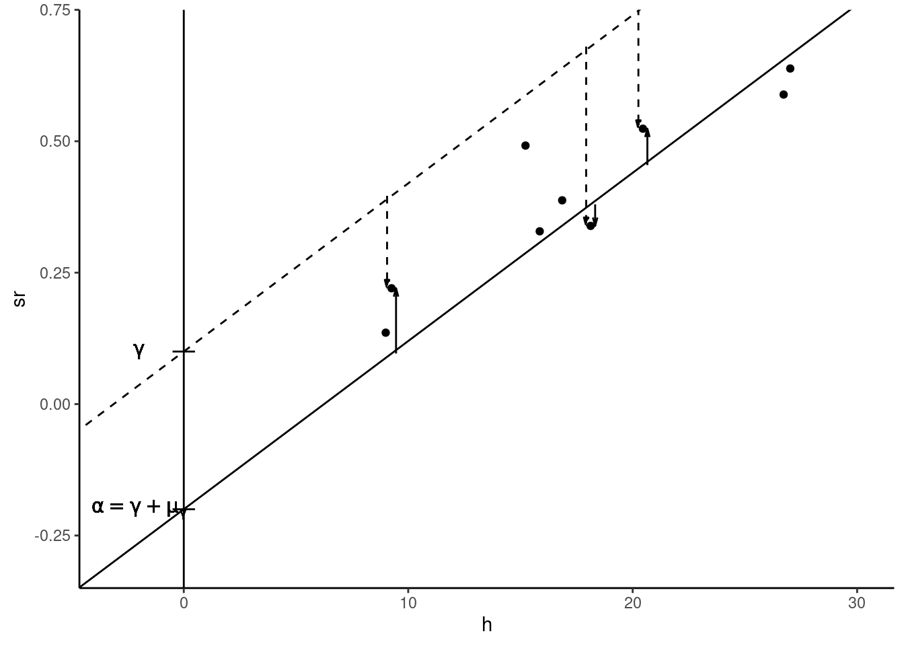
2 Statistical properties of the simple linear estimator
To analyze the statistical properties of the OLS estimator, we use Equation 1.16 that indicates that the difference between the estimated slope and the true value is a linear combination of the errors:
\[ \hat{\beta}=\beta + \sum_{n=1}^N c_n \epsilon_n, \mbox{ with } c_n = (x_n - \bar{x}) / S_{xx} \tag{2.1}\]
The properties of \(\hat{\beta}\) are therefore directly deduced from those of \(\epsilon\). We’ll consider two sets of properties:
- exact properties that apply whatever the size of the sample is (Section 2.1),
- asymptotic properties that indicate approximate results, the approximation being better and better as the sample size grows (Section 2.2).
Section 2.3 explains how these properties can be used to construct confidence intervals and tests.
2.1 Exact properties of the OLS estimator
The OLS estimator is a random variable, for which we observe one value, obtained with a given sample. The exact properties of the OLS estimator concern:
- its expected value: if the true value is \(\beta_o\), what is the expected value of \(\hat{\beta}\), \(\beta_o\) or another value?
- its variance (or standard deviation): is the variance small (the estimation is precise) or large?
The computation of the expected value indicates the presence or absence of a bias. Therefore, we check here whether there is a systematic error (called the bias) while performing the estimation. The variance indicates the efficiency (or the precision) of the estimator. It measures the amount of the sampling error, i.e., the average distance between the value of the estimator and its expected value.
To analyze the properties of the OLS estimator, we’ll make different hypotheses and we’ll see that if these hypotheses are satisfied, the OLS is the best (most efficient) linear unbiased estimator. To illustrate the results of this chapter, we’ll use the price-time model, with the same GDP as previously: \(\alpha = -0.2\), \(\beta = 0.032\) and \(\sigma_\epsilon = 0.08\) and we’ll consider different departures from this reference case.
Errors have 0 expected value
The reference model being \(y_n = \alpha + \beta x_n + \epsilon_n\) with \(\mbox{E}(\epsilon_n) = 0\), consider the alternative model: \(y_n = \gamma + \beta x_n + \eta_n\), for which the slope is the same and the error term is \(\eta_n\), with \(\mbox{E}(\eta) = \mu_\eta \neq 0\). We have therefore: \(y_n = \alpha + \beta x_n + (\eta_n + \gamma - \alpha)\) or: \(\eta_n = \epsilon_n + \alpha - \gamma\) and finally: \(\mbox{E}(\eta) = \mu_\eta = \mbox{E}(\epsilon) + \alpha - \gamma = \alpha - \gamma\).
Therefore, the alternative model is: \(y_n = \gamma + \mu_\gamma + \beta x_n + \epsilon\), which is the same model as the initial model with \(\alpha\) replaced by \(\gamma + \mu_\gamma\). Therefore, it is impossible to discriminate between the initial and the alternative model, as what can be estimated is the sum of the intercept and the expected value of the errors (\(\gamma + \mu_\gamma\)) and the two elements of this sum can’t be estimated separately. This is an illustration of a very important problem in econometrics called identification that we’ll encounter in subsequent chapters. We can say here that \(\gamma\) and \(\mu_\gamma\) are not identified, but that their sum is. Therefore, we can set one of the two parameters to any value. For example, we can simply set \(\mu_\gamma=0\), i.e., suppose that the expected value of the errors is 0 and the other parameter \(\gamma\) became identified, i.e., it can be estimated using the data.
Figure 2.1 illustrates the “reference” model (plain line and \(\epsilon_n\) represented by plain vectors) and the alternative model (dashed line and \(\eta_n\) represented by dashed vectors).
Conditional expectation of the errors is 0
As we have seen, the hypothesis that \(\mbox{E}(\epsilon)=0\) can always be stated if the model contains an intercept. On the contrary, the hypothesis that the expected value of \(\epsilon\) conditional on \(x\) is 0 (\(\mbox{E}(\epsilon |x)=0\)) is much more problematic and the violation of this hypothesis has dramatic consequences for the OLS estimator. It is important to understand that this condition actually implies that there is no correlation between the error and the covariate. Starting with the expression of the covariance between the error and the covariate: \(\mbox{cov}(x, \epsilon) = \mbox{E}\left((x - \mu_x)(\epsilon-\mu_\epsilon)\right)\), with \(\mu_x\) and \(\mu_\epsilon\) the expected values of \(x\) and \(\epsilon\), we can rewrite this covariance using conditional expectation, using the rule of repeated expectations:
\[ \begin{array}{rcl} \mbox{cov}(x, \epsilon) &=& \mbox{E}_x\left[\mbox{E}\left((x - \mu_x)(\epsilon-\mu_\epsilon)| x\right)\right]\\ &=&\mbox{E}_x\left[(x - \mu_x)\left(\mbox{E}(\epsilon-\mu_\epsilon)| x\right)\right]\\ &=&\mbox{E}_x\left[(x - \mu_x)\mbox{E}(\epsilon| x)\right] \end{array} \]
The covariance between \(x\) and \(\epsilon\) is therefore equal to the covariance between \(x\) and the conditional expectation of \(\epsilon\). If \(\mbox{E}(\epsilon|x)\) is a constant (equal to \(\mu_\epsilon\), the unconditional expectation), the covariance is:
\[ \mbox{cov}(x, \epsilon)=\mbox{E}\left[(x - \mu_x)\mu_\epsilon\right] = \mu_\epsilon\mbox{E}\left[x - \mu_x\right]=0 \]
Therefore, a constant conditional expectation of \(\epsilon\) (not necessarily 0 but we have seen previously than we can safely suppose that it is 0) implies that the covariance between the errors and the covariate is 0 or, stated differently, that the errors are uncorrelated with the covariate. From Equation 2.1, the conditional expectation of the estimator is:
\[ \mbox{E}(\hat{\beta}\mid x) = \beta + \sum_{n = 1} ^ N \mbox{E}(c_{n}\epsilon_{n} \mid x_n)= \beta + \sum_{n = 1} ^ N c_{n}\mbox{E}(\epsilon_{n} \mid x_n) \tag{2.2}\]
If the conditional expectation of the errors is constant (\(\mbox{E}(\epsilon_n \mid x_n) = \mu_\epsilon\)), \(\sum_{n=1}^N c_n\mbox{E}(\epsilon_n | x) = \mu_\epsilon\sum_{n=1}^N c_n = 0\) as \(\sum_n c_n = 0\), so that \(\mbox{E}(\hat{\beta} | x) = \beta\), which means that the expected value of the estimator is the true value. In this case, the estimator is unbiased. Therefore, the hypothesis of constant conditional expectation of the errors is crucial.
It is very important to understand why, in practice, this hypothesis may be violated. As an illustration, consider the wage / education model. It is well documented in a lot of countries that, for a given value of education, women earn less than men on average. This means that the conditional expectation of wage is lower for women or, graphically, that in a scatterplot, points for women will be in general below the line which indicates the conditional expectation of wages and that points for men will be above this line. To see whether this can induce a bias in the OLS estimator, rewrite Equation 2.2 as:
\[ \mbox{E}(\hat{\beta}\mid x) = \beta + \frac{\sum_{n=1} ^ N (x_n - \bar{x})\mbox{E}(\epsilon_n | x_n)} {\sum_{n=1} ^ N (x_n - \bar{x}) ^ 2} \]
The second term is the ratio of the covariance between \(\epsilon\) and \(x\) and the variance of \(x\). If not zero, this ratio is the bias of the OLS estimator. In our example, the key question is whether being a male is correlated with education:
- with no correlation, the OLS estimator is unbiased,
- with a negative correlation, the OLS estimator is downward biased,
- with a positive correlation, the OLS estimator is upward biased.
These three situations are depicted in Figure 2.2. The common feature of the three rows of the figure is that women (depicted by circles) are in general below the expected value line (plain line) and men (depicted by triangles) are above. For row 1 of the figure, considering the horizontal position of the points, women and men are approximately uniformly disposed, which indicates the absence of correlation between education and being a male. The regression (dashed) line is then very close to the expected value line, the OLS estimator is unbiased. For row 2 of the figure, males have in general a lower level of education than females. There is therefore a negative correlation between education and being a man and the consequence is that the OLS estimator is downward biased. Finally, for row 3 of the figure, the correlation is positive and the OLS estimator is upward biased.
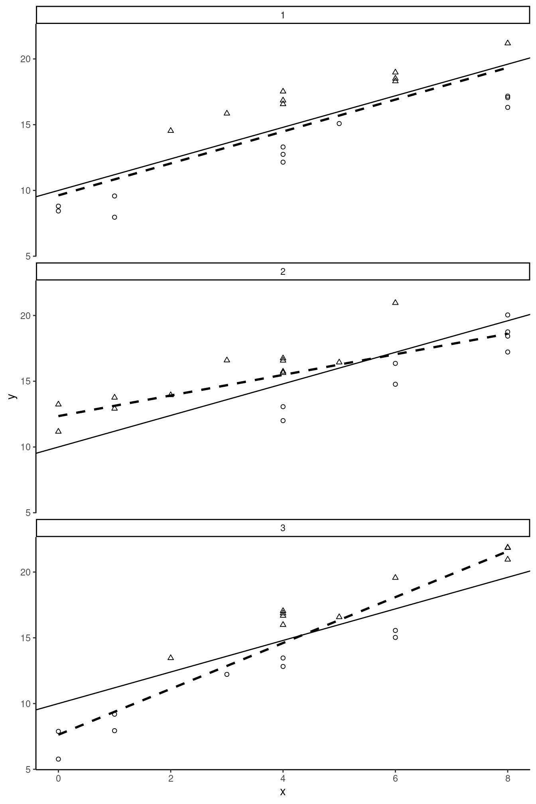
Consider the latter case in details. Women have a lower wage than men for two reasons: they are less educated and, for a given value of education, they receive a lower wage than males. Increasing the education level from, say, 4 to 5 years will have two effects on the expected wage:
- direct positive effect of education on wage,
- indirect positive effect: as being a man is positively correlated with education, considering a higher level of education, we’ll get a subpopulation with a higher share of males, and therefore a higher wage.
The OLS estimator estimates the sum of these two effects and is therefore in this case upward biased.
Estimator for the variance of the OLS estimator
Consider now the conditional variance of the OLS estimator:
\[ \begin{array}{rcl} \mbox{V}(\hat{\beta}\mid x )& = &\mbox{E}\left(\left(\hat{\beta}-\beta\right)^ 2 \mid x\right)\\ & = &\mbox{E}\left(\left(\sum_{n = 1} ^ N c_{n}\epsilon_{n}\right)^ 2 \mid x \right)\\ & = & \frac{1}{S_{xx}^2}\mbox{E}\left(\left(\sum_{n = 1} ^ N (x_n - \bar{x})\epsilon_{n}\right)^ 2 \mid x\right) \end{array} \]
To compute the variance, we therefore have to take the expected value of \(N ^ 2\) terms, \(N\) of them being of the form: \((x_n - \bar{x}) ^ 2 \epsilon_n ^ 2\) and the \(N ^ 2 - N\) other of the form: \((x_n - \bar{x})(x_m - \bar{x})\epsilon_n\epsilon_m\). This is best understood by arranging the \(N^2\) terms in a square matrix of dimension \(N\). With \(N=4\), we have1:
\[ \scriptsize{\left(\begin{array}{cccc} (x_1-\bar{x})^2 \mbox{E}(\epsilon_1^2) & (x_1-\bar{x}) (x_2-\bar{x}) \mbox{E}(\epsilon_1\epsilon_2) & (x_1-\bar{x}) (x_3-\bar{x}) \mbox{E}(\epsilon_1\epsilon_3) & (x_1-\bar{x}) (x_4-\bar{x}) \mbox{E}(\epsilon_1\epsilon_4) \\ (x_2-\bar{x}) (x_1-\bar{x}) \mbox{E}(\epsilon_2\epsilon_1) & (x_2-\bar{x})^2 \mbox{E}(\epsilon_2^2) & (x_2-\bar{x}) (x_3-\bar{x}) \mbox{E}(\epsilon_2\epsilon_3) & (x_2-\bar{x}) (x_4-\bar{x}) \mbox{E}(\epsilon_2\epsilon_4) \\ (x_3-\bar{x}) (x_1-\bar{x}) \mbox{E}(\epsilon_3\epsilon_1) & (x_3-\bar{x}) (x_2-\bar{x}) \mbox{E}(\epsilon_3\epsilon_2) & (x_3-\bar{x})^2 \mbox{E}(\epsilon_3^2) & (x_3-\bar{x}) (x_4-\bar{x}) \mbox{E}(\epsilon_3\epsilon_4) \\ (x_4-\bar{x}) (x_1-\bar{x}) \mbox{E}(\epsilon_4\epsilon_1) & (x_4-\bar{x}) (x_2-\bar{x}) \mbox{E}(\epsilon_4\epsilon_2) & (x_4-\bar{x}) (x_3-\bar{x}) \mbox{E}(\epsilon_4\epsilon_3) & (x_4-\bar{x})^2 \mbox{E}(\epsilon_4^2) \\ \end{array} \right) } \]
Uncorrelation and homoskedasticity
\(\mbox{V}(\hat{\beta}\mid x)\) is obtained by taking the sum of these \(N ^ 2\) terms, \(N\) terms depending on conditional variances (\(\mbox{E}(\epsilon_n ^ 2 \mid x_n) = \mbox{V}(\epsilon_n \mid x_n)\)) and \(N\times(N -1)\) on conditional covariances (\(\mbox{E}(\epsilon_n\epsilon_m\mid x_n, x_m) = \mbox{cov}(\epsilon_n, \epsilon_m\mid x_n, x_m)\)). The resulting estimator has a very simple form if two hypothesis are made:
- the errors are homoskedastic, which means that their variances don’t depend on \(x\), the \(N\) terms that contain the conditional variances are then equal to \((x_n - \bar{x})^2\sigma_\epsilon ^ 2\),
- the errors are uncorrelated, the \(N\times(N-1)\) terms that involve the covariance are then equal to 0.
With these two hypotheses in hand, only the diagonal terms are not zero and their sum is \(\sigma_\epsilon ^ 2 \sum_{n=1}^N (x_n - \bar{x}) ^ 2 = \sigma_\epsilon ^ 2 S_{xx}\), which finally leads to the simplified formula of the variance of \(\hat{\beta}\):
\[ \mbox{V}(\hat{\beta}\mid x) = \sigma_{\hat{\beta}} ^ 2 = \frac{\sigma_\epsilon ^ 2S_{xx}}{S_{xx} ^ 2}= \frac{\sigma_\epsilon ^ 2}{S_{xx}} = \frac{\sigma_\epsilon ^ 2}{N\hat{\sigma}_x^2} \tag{2.3}\]
Note that this is the “true” variance of \(\hat{\beta}\) if the two hypotheses are satisfied, and that it can’t be computed as it depends on the unknown parameter \(\sigma_\epsilon\). The square root of Equation 2.3 is the standard deviation of \(\beta\), is measured in the same unit as \(\beta\) and is commonly called the standard error of \(\hat{\beta}\). It is therefore a convenient indicator of the precision of the estimator:
\[ \sigma_{\hat{\beta}} = \frac{\sigma_\epsilon}{\sqrt{N}\hat{\sigma}_x} \tag{2.4}\]
It is clear from Equation 2.4 that the precision of the estimator depends on three components which will be described in details in the next subsection.
Determinants of the precision of the OLS estimator
First consider the “size” of the error, measured by its standard deviation \(\sigma_\epsilon\). Figure 2.3 presents a scatterplot for six samples which use the same DGP, except that samples on the second line are generated with a smaller value of \(\sigma_\epsilon\). The “true model” (\(\alpha + \beta x\)) is represented by a plain line and the regression line is dashed. Obviously, the estimation is much more precise on the second line of Figure 2.3, because of small-sized errors.
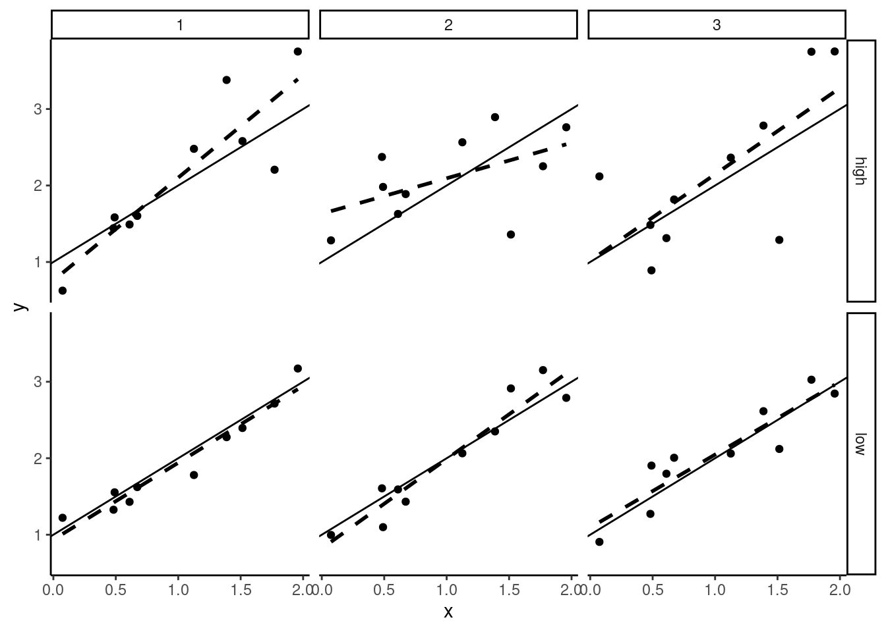
Next consider the sample size. In Figure 2.4, we take the same value of \(\sigma_\epsilon\) as in row 1 of Figure 2.3, but we increase the sample size to 40 for the samples of the second line. In large samples (second line in Figure 2.4) the slope is very precisely estimated, which means that the value of \(\hat{\beta}\) is almost the same from a sample to another. On the contrary, with a small sample size (first line in Figure 2.4), the slopes of the regression lines are very different for the three samples, which indicates that the standard error of \(\hat{\beta}\) is high (or that the estimator is imprecise).
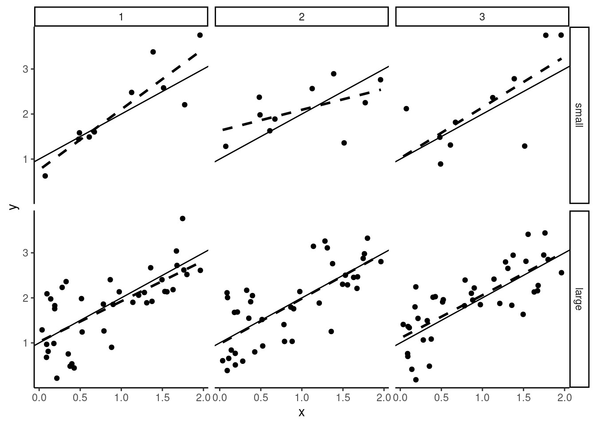
Finally, in Figure 2.5, we consider a variation of the variance of \(x\). For samples on the second line, the variance of \(x\) is much smaller than for samples on the first line. The larger the variance of \(x\) is, the more precise is the estimator of the slope. Obviously, it is difficult to estimate the effect of education on wage if all the individuals in the sample have almost the same level of education. Consider the extreme case of no variation of \(x\) in a sample; in this case it is impossible to estimate the effect of \(x\), as all the observations are characterized by the same value of \(x\).
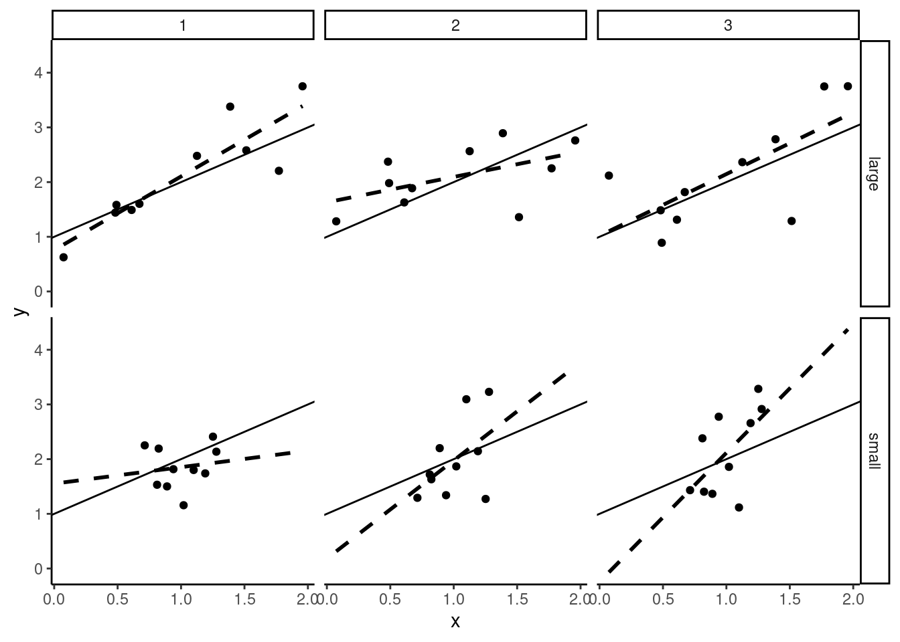
All these results can be illustrated by simulations, using the price_time data set. For convenience, we replicate in the following code the operations we performed on this data set in Chapter 1:
We start with our reference case (\(\sigma_\epsilon = 0.08\), \(N = 9\) and \(x\) is the vector of the threshold value of time for the nine selected cities of the prtime data set, with a sample standard deviation \(\hat{\sigma}_x = 6.085\)).
alpha <- - 0.2 ; beta <- 0.032
seps <- 0.08
x <- pull(prtime, h)
N <- length(x)We generate \(R = 100\) samples using each time the same vector of covariate (\(x\)) and drawing the errors in a normal distribution:
To illustrate the influence of \(\sigma_\epsilon\) on the precision of the estimator, we take a value of \(\sigma_\epsilon =0.04\), i.e., we divide \(\sigma_\epsilon\) by 2 compared to the reference case:
Next, we increase the sample size to \(N = 36\), i.e., we multiply the sample size by 4. More specifically, for every sample each value of \(x\) is repeated four times:
Finally, we increase the variation of \(x\), simply by multiplying all the values by 2. In this case, the standard deviation of \(x\) is also multiplied by 2.
The standard deviation for the reference case is:
\[ \hat{\sigma}_{\hat{\beta}} = \frac{\sigma_\epsilon}{\sqrt{N} \hat{\sigma}_x}= \frac{0.08}{\sqrt{9} \times 6.085} = 0.0044 \]
which is very close to the standard deviation of \(\hat{\beta}\) for our \(R = 100\) samples:
dataref %>% group_by(smpls) %>%
summarise(slope = sum( (x - mean(x)) * (y - mean(y)) ) /
sum( (x - mean(x)) ^ 2)) %>%
summarise(mean = mean(slope), sd = sd(slope))# A tibble: 1 × 2
mean sd
<dbl> <dbl>
1 0.0316 0.00420Note that we used twice the summarise function. The first time, it is used with group_by so that a tibble with R lines is returned, containing the values of the estimator slope. The second time, a one-line tibble is returned containing the mean and the standard deviation of the R values of the estimator.
When \(\sigma_\epsilon\) is divided by 2 (from 0.08 to 0.04), the standard deviation of \(\hat{\beta}\) should also be divided by 2 (from \(0.00438\) to \(0.00219\)), which is approximately the value of the standard deviation of the values of \(\hat{\beta}\) for our \(R = 100\) samples:
dataseps %>% group_by(smpls) %>%
summarise(hbeta = sum( (x - mean(x)) * (y - mean(y)) ) /
sum( (x - mean(x)) ^ 2)) %>%
summarise(mean = mean(hbeta), sd = sd(hbeta))# A tibble: 1 × 2
mean sd
<dbl> <dbl>
1 0.0318 0.00222When the sample size is multiplied by 4, \(\hat{\sigma}_\beta\) should also be divided by 2:
datasN %>% group_by(smpls) %>%
summarise(hbeta = sum( (x - mean(x)) * (y - mean(y)) ) /
sum( (x - mean(x)) ^ 2)) %>%
summarise(mean = mean(hbeta), sd = sd(hbeta))# A tibble: 1 × 2
mean sd
<dbl> <dbl>
1 0.0323 0.00191Finally, when every value of \(x\) is multiplied by 2, \(x\)’s standard deviation is also multiplied by 2 and \(\hat{\sigma}_\beta\) should be divided by 2:
Variance of \(\hat{\alpha}\) and covariance between \(\hat{\alpha}\) and \(\hat{\beta}\)
To get the variance of the estimator of the intercept, consider the “true” and the fitted model for one observation:
\[ \left\{ \begin{array}{rcl} y_n &=& \alpha +\beta x_n + \epsilon_n\\ y_n &=& \hat{\alpha} + \hat{\beta} x_n+ \hat{\epsilon}_n\\ \end{array} \right. \tag{2.5}\]
Equating the two expressions in Equation 2.5, we get:
\[ (\hat{\alpha} - \alpha) + (\hat{\beta} - \beta) x_n + (\hat{\epsilon}_n - \epsilon_n) = 0 \tag{2.6}\]
Summing Equation 2.6 for the whole sample and dividing by \(N\):2
\[ (\hat{\alpha} - \alpha) + (\hat{\beta} - \beta) \bar{x} - \bar{\epsilon} = 0 \tag{2.7}\]
Finally, subtracting Equation 2.7 from Equation 2.6:
\[ (\hat{\beta} - \beta)(x_n - \bar{x}) + \hat{\epsilon}_n - (\epsilon_n - \bar{\epsilon}) = 0 \tag{2.8}\]
From Equation 2.7, the variance of \(\hat{\alpha}\) is the expected value of the square of:
\[ \begin{array}{rcl} (\hat{\alpha} - \alpha) &=& - (\hat{\beta} - \beta) \bar{x} + \bar{\epsilon}\\ &=& -\sum_n c_n \epsilon_n \bar{x} + \bar{\epsilon} \\ &=& -\sum_n \left(\bar{x} c_n - \frac{1}{N}\right)\epsilon_n \end{array} \] With the hypothesis of homoskedastic and uncorrelated errors, the variance simplifies to:
\[ \sigma_{\hat{\alpha}} ^ 2 = \sigma_\epsilon^2 \sum_n \left(\bar{x} ^ 2 c_n ^ 2 + \frac{1}{N ^ 2} - \frac{2\bar{x}}{N} c_n\right) \]
As \(\sum_n c_n = 0\) and \(\sum_n c_n ^ 2 = \frac{1}{N \hat{\sigma}_x ^ 2}\), we finally get:
\[ \sigma_{\hat{\alpha}} ^ 2 = \frac{\sigma_\epsilon ^ 2}{N \hat{\sigma}_x ^ 2}(\hat{\sigma}_x ^ 2 + \bar{x} ^ 2) \]
Finally, to get the covariance between the slope and the intercept, we take the product of the two estimators in deviation from their expected values.
\[ (\hat{\alpha} - \alpha)(\hat{\beta} - \beta) = -\left[\sum_n \left(\bar{x} c_n - \frac{1}{N}\right)\epsilon_n\right] \left[\sum_n c_n \epsilon_n\right] \]
Taking the expected value, we get:
\[ \hat{\sigma}_{\hat{\alpha}\hat{\beta}} = - \sigma_\epsilon ^ 2 \sum_n \left(\bar{x} c_n ^ 2 - \frac{1}{N} c_n\right) = - \bar{x}\frac{\sigma_\epsilon ^ 2}{N \hat{\sigma}_x ^ 2} \]
We can then compactly write the variances and the covariance of the OLS estimator in matrix form:
\[ \left( \begin{array}{cc} \sigma_{\hat{\alpha}} ^ 2 & \sigma_{\hat{\alpha}\hat{\beta}} \\ \sigma_{\hat{\alpha}\hat{\beta}} & \sigma_{\hat{\beta}} ^ 2 \end{array} \right) = \frac{\sigma_\epsilon ^ 2}{N\hat{\sigma}_x ^ 2} \left( \begin{array}{cc} \bar{x} ^ 2 + \hat{\sigma}_x ^ 2 & - \bar{x} \\ -\bar{x} & 1 \end{array} \right) \tag{2.9}\]
Estimation of the variance of the errors
The standard deviation of the OLS estimator can’t be computed because it depends on an unknown parameter \(\sigma_\epsilon\). To get an estimation of \(\sigma_{\hat{\beta}}\), we therefore need to estimate first \(\sigma_\epsilon\). If the error were observed, a natural estimator would be obtained by computing the empirical variance of the errors in the sample: \(\frac{1}{N}\sum_{n=1} ^ N (\epsilon_n -\bar{\epsilon}) ^ 2\). As the errors are not observed, this estimator cannot be computed, but a feasible estimator is obtained by replacing the unobserved errors by the residuals:
\[ \hat{\sigma}_\epsilon ^ 2 = \frac{\sum_{n=1} ^ N \hat{\epsilon}_n ^ 2}{N} \]
To analyze the properties of this estimator, we first compute the variance of one residual. From Equation 2.8, a residual can be written as:
\[ \hat{\epsilon}_n = \epsilon_n - \bar{\epsilon}- (\hat{\beta} - \beta)(x_n - \bar{x})= \epsilon_n - \frac{1}{N}\sum_n \epsilon_n - (x_n - \bar{x})\sum_n c_n\epsilon_n \]
Taking the expected value of the square of this expression and noting that \(\mbox{E}\left(\bar{\epsilon} (\hat{\beta} - \beta) (x_n - \bar{x})\right) = \frac{1}{N}(x_n - \bar{x})\sigma_\epsilon ^ 2\sum_n c_n = 0\), we get the following variance:
\[ \mbox{V}(\hat{\epsilon}_n) = \sigma_\epsilon ^ 2 + \frac{1}{N}\sigma_\epsilon ^ 2 + \frac{(x_n - \bar{x}) ^ 2}{S_{xx}} \sigma_\epsilon ^ 2 - 2 \frac{1}{N}\sigma_\epsilon ^ 2 - 2 \frac{(x_n - \bar{x}) ^ 2}{S_{xx}}\sigma_\epsilon ^ 2 \]
Re-arranging terms:
\[ \sigma_{\hat{\epsilon}_n}^2= \sigma_\epsilon ^ 2 \left(1 - \frac{1}{N} - \frac{(x_n- \bar{x}) ^ 2}{S_{xx}}\right) \]
Note that \(\sigma_{\hat{\epsilon}_n} < \sigma_\epsilon\), which means that residuals are on average “smaller” than errors; this is a direct consequence of the fact that we minimize the sum of the squares of the residuals (see Section 1.4.2). Summing for all the observations, we get the expected value of the sum of squares residuals:
\[ \mbox{E}\left(\sum_{n=1} ^ N \hat{\epsilon}_n ^ 2\right) = \sigma_{\epsilon} ^ 2 (N - 2) \]
Therefore, the previously computed estimator of the variance of the errors \(\hat{\sigma}_\epsilon ^ 2\) is biased:
\[ \mbox{E}(\hat{\sigma}_\epsilon ^ 2) = \frac{\mbox{E}\left(\sum_{n=1} ^ N \hat{\epsilon}_n ^ 2\right)}{N} = \sigma_\epsilon ^ 2 \frac{N-2}{N} \] More precisely, \(\hat{\sigma}_\epsilon\) is downward biased, by a factor of \(\sqrt{\frac{N-2}{N}}\). For example, for \(N=10, 20, 100\), we get \(\sqrt{\frac{N-2}{N}} = 0.89, 0.95, 0.99\), which means a 11, 5, 1% downward bias for the estimated standard deviation. As the factor \(\frac{N-2}{N}\) tends to 1 for \(N\rightarrow +\infty\), the bias will be negligible for large samples, but can be severe in small samples. We’ll from now denote \(\dot{\sigma}_\epsilon\) the unbiased estimator:
\[ \dot{\sigma}_\epsilon = \sqrt{\frac{N}{N-2}}\hat{\sigma}_\epsilon \]
\(\dot{\sigma}_\epsilon\) is often called the residual standard error.
Exact distribution of the OLS estimator with normal errors
If the distribution of the errors is normal, as the OLS estimator is a linear combination of the errors, its exact distribution is also normal. Therefore:
\[ \hat{\beta}_N \sim \mathcal{N}\left(\beta, \frac{\sigma_\epsilon}{\sqrt{N}\hat{\sigma}_x}\right) \]
Subtracting the mean and dividing by the standard deviation, we get a standard normal deviate:
\[ \frac{\hat{\beta}-\beta}{\sigma_\epsilon / (\sqrt{N}\hat{\sigma}_x)} \sim \mathcal{N}(0, 1) \] \(\sigma_\epsilon\) is unknown; replacing it by its unbiased estimator \(\dot{\sigma}_\epsilon\) induces an increase of the uncertainty and the distribution changes from a normal to a Student t distribution:
\[ \frac{\hat{\beta}-\beta}{\dot{\sigma}_\epsilon / (\sqrt{N}\hat{\sigma}_x)} \sim t_{N-2} \]
The Student distribution is symmetric, has fatter tails than the normal distribution and converges in distribution to the normal distribution. Actually, it is worth considering the Student and not the normal distribution as an approximation only for small-sized samples. For example, for sample sizes of 10, 20, 50 and 100, 5% critical values for a Student are 2.31, 2.1, 2.01 and 1.98, as the critical value is 1.96 for the normal distribution.
Computation of the variance of the OLS estimator with R
We go back to the price-time model estimated in the previous chapter. Remember that the fitted model (called pxt) was obtained with the following code:
We first compute “by hand” the standard error of the OLS estimator and we then use the relevant methods for lm objects to do so. We first extract the \(x\) vector, its length \(N\), its mean \(\bar{x}\) and its sample standard deviation \(\hat{\sigma}_x\):
We then get the sum of square residuals, and the residual standard error:
which finally leads to the estimators of the standard deviation of the OLS coefficients:
All this information can be retrieved easily with R using specific functions. To get the sample size and the number of degrees of freedom (which is, in the simple linear model, \(N-2\)), we have:
nobs(pxt)
## [1] 9
df.residual(pxt)
## [1] 7\(\dot{\sigma}_\epsilon\) is computed using:
sigma(pxt)
## [1] 0.07177The matrix of variance-covariance of the estimators is obtained using the vcov function:
vcov(pxt)
## (Intercept) h
## (Intercept) 0.0053673 -2.722e-04
## h -0.0002722 1.546e-05To get the standard deviations of the intercept and the slope estimators, we first extract the diagonal elements of this matrix and we next take the square roots of the values:
pxt %>% vcov %>% diag %>% sqrt
## (Intercept) h
## 0.073262 0.003931More simply, the micsr::stder function can be used:
pxt %>% stderOLS estimator is BLUE
We have seen previously that the OLS estimator is a linear estimator (i.e., it is a linear combination of the \(N\) values of \(y\) for the sample):
\[ \hat{\beta} = \sum_{n=1} ^ N \left(\frac{ (x_n - \bar{x})} {\sum_{n=1} ^ N (x_n - \bar{x}) ^ 2} \right) y_n = \sum_{n=1} ^ N c_n y_n \]
Moreover, we have seen that if \(\mbox{E}(\epsilon \mid x) = 0\), it is unbiased and, with the hypothesis of homoskedastic and uncorrelated errors, we have established that its variance is: \(\sigma_\epsilon ^ 2 / S_{xx}\). We’ll show in this subsection that among all the linear unbiased estimators, the OLS estimator is the one with the smallest variance. For these reasons, the OLS estimator is the best linear unbiased estimator (BLUE).
Comparing OLS with other linear unbiased estimators
Consider another linear estimator, with weights \(a_n\):
\[ \tilde{\beta} = \sum_{n=1} ^ N a_n y_n \]
Replacing \(y_n\) by \(\alpha + \beta x_n + \epsilon_n\), we have:
\[ \tilde{\beta} = \sum_{n=1} ^ N \ a_n (\alpha + \beta x_n + \epsilon_n) = \alpha \sum_{n=1} ^ N a_n + \beta \sum_{n=1} ^ N a_n x_n + \sum_{n=1} ^ N a_n \epsilon_n \]
Therefore, for any unbiased estimator, one must have \(\sum_{n=1} ^ N a_n= 0\) and \(\sum_{n=1} ^ N a_n x_n = 1\).
We then have: \(\tilde{\beta} - \beta = \sum_{n=1} ^ N a_n \epsilon_n\) and the variance of \(\tilde{\beta}\) is:
\[ \sigma_{\tilde{\beta}} ^ 2 = \mbox{E} \left(\left[\sum_{n=1} ^ N a_n \epsilon_n\right] ^ 2\right) = \sigma_\epsilon ^ 2 \sum_{n=1} ^ N a_n ^ 2 \]
defining \(d_n = a_n - c_n\), we have:
\[ \sum_{n=1} ^ N a_n ^ 2 = \sum_{n=1} ^ N (c_n + d_n) ^ 2 = \sum_{n=1} ^ N c_n ^ 2 + \sum_{n=1} ^ N d_n ^ 2 + 2 \sum_{n=1} ^ N d_n c_n \]
But the last term is 0 because:
\[ \begin{array}{rcl} \sum_{n=1} ^ N d_n c_n &= & \sum_{n=1} ^ N (a_n - c_n) c_n \\ &=& \frac{1}{S_{xx}}\sum_{n=1} ^ N a_n x_n - \frac{1}{S_{xx}} \bar{x} \sum_{n=1} a_n - \sum_{n=1} ^ N c_n ^ 2 \\ &=&0 \end{array} \]
so that \(\sum_{n=1} ^ N a_n ^ 2 = \sum_{n=1}^N c_n ^ 2 + \sum_{n=1}^N d_n ^ 2\) and:
\[ \sigma_{\tilde{\beta}}^2 = \sigma_\epsilon ^ 2 \sum_{n=1} ^ N a_n ^ 2 = \sigma_\epsilon ^ 2 \left( \sum_{n=1}^N c_n ^ 2 + \sum_{n=1}^N d_n ^ 2\right) = \sigma_{\hat{\beta}}^2 + \sigma_\epsilon ^ 2 \sum_{n=1}^N d_n ^ 2 \]
Therefore, \(\sigma_{\tilde{\beta}}^2 > \sigma_{\hat{\beta}}^2\), which means that the OLS estimator is BLUE, i.e., it is, among all the unbiased linear estimators, the one with the lower variance.
Practical example
Consider as an example the price-time model. The model we have previously estimated is:
pxt <- lm(sr ~ h, prtime)Consider now the same model without intercept (\(\alpha = 0\)). As \(\alpha = - a / (b - a)\), \(a\) and \(b\) being respectively the minimal and the maximum time value, \(\alpha = 0\) implies that the minimal time value is 0. To fit the model that imposes this hypothesis, we need to fit the same model without intercept. In R, this is performed using either - 1 or + 0 in the formula :
The same model can also be estimated by updating the previous fitted model pxt, using the update function which takes as first argument the model we wish to update:
The formula is updated using ., which means the same thing as in the initial model. Therefore, . ~ . means the initial formula and we remove the intercept by either “adding” 0 or “subtracting” 1.
The fitted model is presented in Figure 2.6.
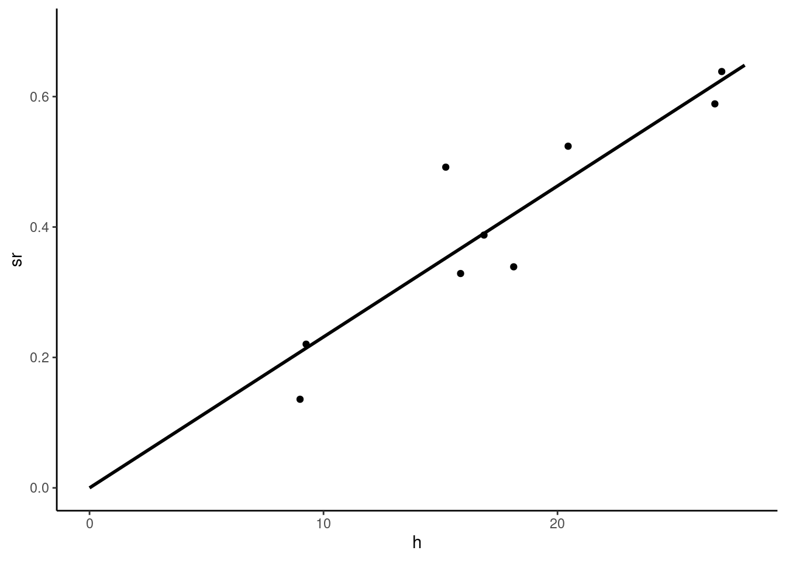
For this model without intercept, the formula for the slope is:
\[ \hat{\beta} = \frac{\sum_{n=1}^N x_n y_n}{\sum_{n=1}^N x_n ^ 2} \]
Or, replacing \(y_n\) by \(\beta x_n + \epsilon_n\) :
\[ \hat{\beta} = \beta + \frac{\sum_{n=1}^N x_n \epsilon_n}{\sum_{n=1}^N x_n ^ 2} \]
for which the variance is:
\[ \sigma_{\hat{\beta}} ^ 2 = \frac{\sigma_\epsilon ^ 2}{\sum_{n=1}^N x_n ^ 2} = \frac{\sigma_\epsilon ^ 2}{N A_{x ^ 2}} \]
where \(A_{x ^ 2}\) is the arithmetic mean of the squares of \(x\).
An alternative estimation method consists of drawing lines from every point to the origin, as illustrated in Figure 2.7, and to estimate \(\beta\) by the arithmetic mean of the \(N\) slopes, which are \(y_n / x_n\). Formally, we have:
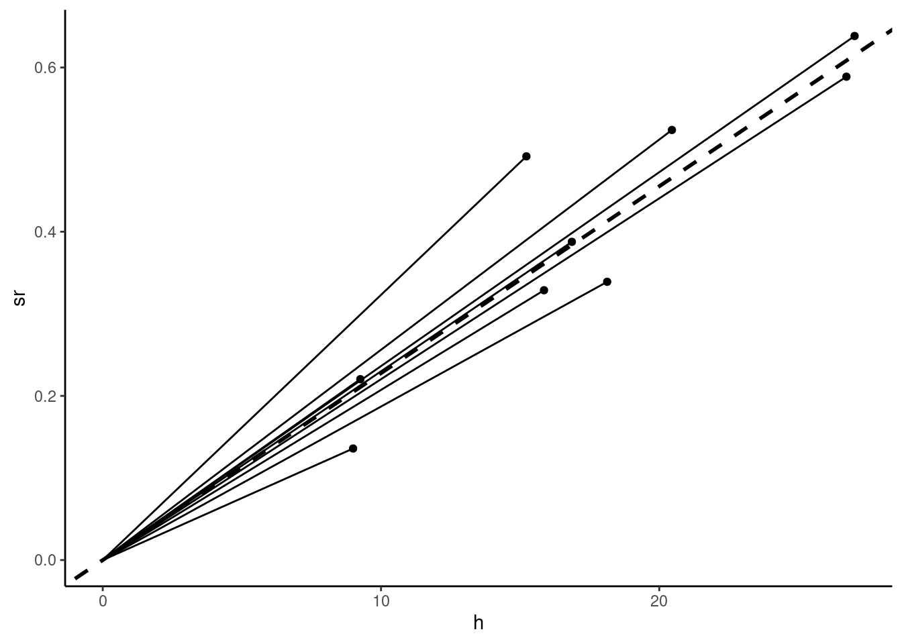
\[ \tilde{\beta}=\frac{1}{N}\sum_{n = 1} ^ N \frac{y_n}{x_n} \]
This is a linear estimator, with weights \(a_n = \frac{1}{N}\frac{1}{x_n}\). Replacing \(y_n\) by \(\beta x_n + \epsilon_n\), we get :
\[ \tilde{\beta}= \beta + \frac{1}{N}\sum_{n = 1} ^ N \frac{\epsilon_n}{x_n} \]
This linear estimator is therefore unbiased. Its variance is:
\[ \sigma_{\tilde{\beta}} = \frac{\sigma_\epsilon ^ 2}{N ^ 2}\sum_{n = 1}^N \frac{1}{x_n ^ 2} = \frac{\sigma_\epsilon ^ 2}{N H_{x ^ 2}} \]
where \(H_{x ^ 2} = \frac{N}{\sum_{n=1}^N\frac{1}{x_n ^ 2}}\) is the harmonic mean of \(x ^ 2\). As the harmonic mean is always lower than the arithmetic mean, \(\sigma_{\tilde{\beta}} > \sigma_{\hat{\beta}}\) and therefore \(\tilde{\beta}\) is less precise than \(\hat{\beta}\). The value of this alternative estimator can be computed as follow:
slope <- prtime %>% transmute(slope = sr / h) %>%
summarise(slope = mean(slope)) %>% pull(slope)
slope
## [1] 0.02277Once the estimator is computed, we can calculate \(\hat{\sigma}_\epsilon\) and \(\hat{\sigma}_{\tilde{\beta}}\) and, as intermediate results, the arithmetic and the harmonic means of \(x ^ 2\):
We check that the harmonic mean (204) is lower than the arithmetic mean (347). Comparing with the OLS results:
pxt2 %>% stder
## h
## 0.001205we confirm that the OLS estimator has a lower standard error than the alternative estimator.
2.2 Asymptotic properties of the estimator
Asymptotic properties of an estimator deal with the behavior of this estimator when the sample size increases without bound. Compared to exact properties which are true and hold whatever the sample size is, asymptotic properties are approximations, the better the larger the sample size is. Two notions of convergence, that rely on two fundamental theorems are used:
- the convergence in probability, based on the law of large numbers,
- the convergence in distribution, based on the central-limit theorem.
Convergence in probability
We consider an estimator as a sequence of random numbers, indexed by the size of the sample on which it has been estimated: \(\left\{\hat{\beta}_N\right\}\). This sequence converges in probability to a constant \(\theta\) if:
\[ \lim_{N\rightarrow \infty} \mbox{P}(\mid \hat{\beta}_N - \theta\mid > \nu) = 0 \;\forall \nu \]
This is denoted by: \(\hat{\beta}_N \xrightarrow{p} \theta \;\mbox{ or } \;\mbox{plim}\,\hat{\beta} = \theta\). Convergence in probability implies convergence in mean square, which is defined by:
\[ \lim_{N\rightarrow + \infty} \mbox{E}\left( (\hat{\beta}_N - \theta) ^ 2\right) = 0 \]
and means that:
\[ \left\{ \begin{array}{l} \lim_{N\rightarrow + \infty} \mbox{E}(\hat{\beta}_N) = \theta \\ \lim_{N\rightarrow + \infty} V(\hat{\beta}_N) = 0 \\ \end{array} \right. \]
If an estimator converges in mean square to its true value \(\beta\), we’ll write \(\hat{\beta}_N \xrightarrow{\mbox{m.s.}} \beta\) and we’ll also use \(\mbox{plim} \, \hat{\beta}_N = \beta\), as convergence in mean squares implies convergence in probability.3 We’ll also say in this case that the estimator is consistent. Note that, on the opposite, an estimator may be inconsistent for two reasons:
- the estimator doesn’t converge in probability to any value,
- the estimator converges in probability to \(\theta \neq \beta\).
The consistency of an estimator shouldn’t be confused with the property of unbiasedness, even if we often encounter estimators which are unbiased and consistent:
- unbiasedness is an exact property (true or false whatever the sample size), and it refers only to the expected value of the estimator and doesn’t say anything about its variance,
- consistency is an asymptotic property, which implies a limit for the expected value (\(\beta\)) and for the variance (0) of the estimator.
Therefore, an unbiased estimator can be inconsistent and, conversely, a consistent estimator can be biased. Consider for example that we have a random sample of N observations of a variable \(x\) which has a mean and a variance equal respectively to \(\mu\) and \(\sigma^2\). A natural estimator of \(\mu\) is the arithmetic mean: \(\bar{x}_N = \frac{1}{N} \sum_{n=1}^N x_n\), with expected value and variance:
\[ \left\{ \begin{array}{rcl} \mbox{E}(\bar{x}_N) &=& \mbox{E}\left(\frac{1}{N} \sum_{n=1}^N x_n\right) = \frac{1}{N}\sum_{n=1}^N \mbox{E}(x_n)=\frac{1}{N}\sum_{n=1}^N \mu = \mu \\ \mbox{V}(\bar{x}_N) &=& \mbox{V}\left(\frac{1}{N} \sum_{n=1}^N x_n\right) = \frac{1}{N ^ 2}\sum_{n=1}^N \mbox{V}(x_n)=\frac{1}{N^2}\sum_{n=1}^N \sigma^2 = \frac{\sigma ^ 2}{N} \end{array} \right. \]
This estimator is unbiased and consistent (the variance tends to 0 and the expected value is equal to the population mean \(\mu\)). Consider now two alternative estimators.4 The first one is:
\[ \dot{x}_N = \frac{1}{N - 1} \sum_{n=1}^N x_n \]
Its first two moments can easily be obtained by writing \(\dot{x}_N\) as a function of \(\bar{x}_N\): \(\dot{x}_N = \frac{N}{N-1} \bar{x}_N\), so that \(\mbox{E}(\dot{x}_N) = \frac{N}{N-1} \mu\) and \(\mbox{V}(\dot{x}_N) = \left(\frac{N}{N-1}\right) ^ 2 \frac{\sigma^ 2}{N}\). The estimator is upward biased, by a multiplicative factor of \(\frac{N}{N-1}\). The bias is severe in small samples (for example 25% if \(N\) is equal to 5), but becomes negligible as \(N\) grows. As the variance tends to 0 and the expected value to \(\mu\), \(\dot{x}_N\) is consistent.
The second estimator is:
\[ \tilde{x}_N = \frac{1}{2} x_1 + \frac{1}{2} \frac{1}{N - 1} \sum_{n=2}^N x_n \]
It consists of first taking the mean for the whole sample except the first observation and then taking the simple average between it and the first observation: \(\tilde{x}_N = \frac{1}{2} x_1 + \frac{1}{2} \bar{x}_{N-1}\). It is unbiased, as:
\[\mbox{E}(\tilde{x}_N) = \frac{1}{2} \mbox{E}(x_1) + \frac{1}{2} \mbox{E}(\bar{x}_{N-1})=\frac{1}{2}\mu + \frac{1}{2}\mu = \mu \]
and the variance is: \[\mbox{V}(\tilde{x}_N) = \frac{1}{4} \mbox{V}(x_1) + \frac{1}{4} \mbox{V}(\bar{x}_{N-1})= \frac{1}{4}\sigma^2 + \frac{1}{4}\frac{\sigma^2}{N - 1} \]
which tends to \(\frac{1}{4}\sigma^2\) as \(N \rightarrow +\infty\). Therefore, this unbiased estimator is not consistent. The problem is that the weight of the first observation is constant and, therefore, the value obtained for \(x_1\) influences the estimator, whatever the size of the sample.
The OLS estimator writes:
\[ \hat{\beta}_N = \beta + \frac{\sum_{n=1} ^ N (x_n - \bar{x}) \epsilon_n}{N \hat{\sigma}_x ^ 2} = \beta + \frac{\hat{\sigma}_{x\epsilon}}{\hat{\sigma}_x ^ 2} \tag{2.10}\]
where \(\bar{x}\), \(\hat{\sigma}_x ^ 2\) and \(\hat{\sigma}_{x\epsilon}\) are the sample estimates of the population mean and variance of \(x\) and of the covariance between \(x\) and \(\epsilon\).5 As the sample size increases, these three estimators converge to their population counterpart, namely \(\mu_x = \mbox{E}(x)\), \(\sigma_x^2 = \mbox{V}(x)\) and \(\sigma_{x\epsilon}=\mbox{cov}(x, \epsilon)\). We therefore have:
\[ \mbox{plim}\,\hat{\beta}_N = \beta + \frac{\sigma_{x\epsilon}}{\sigma_x ^2} = \theta \]
\(\theta\) equals \(\beta\), in which case the estimator is consistent, if \(x\) is uncorrelated in the population with \(\epsilon\) (\(\sigma_{x\epsilon}=0\)).
Convergence in distribution: central-limit theorem
When \(N\rightarrow +\infty\), \(\hat{\beta}_N\) has a degenerate distribution, as it converges to a constant (which is \(\beta\) if the estimator is consistent) as its variance tends to 0. In this subsection, we seek to analyze the shape of the distribution of \(\hat{\beta}\) as the sample size grows. We therefore need to consider a transformation of \(\hat{\beta}_N\) which has a constant variance, and we’ll see that it is \(\sqrt{N}(\hat{\beta} - \beta)\). Starting again with the equation that relates \(\hat{\beta}_N\) to the errors and defining \(w_n = \frac{x_n - \bar{x}}{\sqrt{N}\hat{\sigma}_x}\), we have:
\[ \hat{\beta}_N = \beta + \sum_{n=1}^N c_n \epsilon_n = \beta + \frac{\sum_{n=1}^N w_n \epsilon_n}{\sqrt{N}\hat{\sigma}_x} \]
Note that \(w_n\) sums to 0 (as \(c_n\)), but that \(\sum_{n=1}^ Nw_n ^ 2=1\). Subtracting \(\beta\) and multiplying by \(\sqrt{N}\), we get:
\[ z = \sqrt{N}(\hat{\beta}_N - \beta) = \sum_{n=1}^N w_n \frac{\epsilon_n}{\hat{\sigma}_x} \]
The distribution of \(\sqrt{N}(\hat{\beta}_N - \beta)\) is the distribution of a linear combination of \(N\) random deviates \(\epsilon_n / \hat{\sigma}_x\), with an unknown distribution, a 0 expected value and a standard deviation equal to \(\sigma_\epsilon / \hat{\sigma}_x\). The first two moments of \(z = \sqrt{N}(\hat{\beta}_N - \beta)\) don’t depend on \(N\) (\(\mbox{E}(z)=0\) and \(\mbox{V}(z) = \sum_n \omega_n ^ 2 \sigma_\epsilon ^ 2/ \hat{\sigma}_x ^ 2 = \sigma_\epsilon ^ 2/ \hat{\sigma}_x ^ 2\)). As \(N\) tends to infinity, the distribution of \(\sqrt{N}(\hat{\beta}_N - \beta)\) still has a 0 expected value and a standard deviation equals to \(\sigma_\epsilon/\hat{\sigma}_x\). The central-limit theorem states that the distribution of \(\sqrt{N}(\hat{\beta}_N - \beta)\) converges in distribution to a normal distribution as \(N\) tends to infinity, whatever the distribution of \(\epsilon\). This is denoted by:
\[ \sqrt{N}(\hat{\beta}_N - \beta) \xrightarrow{d} \mathcal{N}\left(0, \frac{\sigma_\epsilon}{\hat{\sigma}_x}\right) \]
Stated differently, the asymptotic distribution of \(\hat{\beta}\) is a normal distribution with an expected value equal to \(\beta\) and a standard deviation equal to \(\frac{\sigma_{\epsilon}}{\sqrt{N} \hat{\sigma}_x}\):
\[ \hat{\beta}_N \stackrel{a}{\sim} \mathcal{N}\left(\beta, \frac{\sigma_\epsilon}{\sqrt{N}\hat{\sigma}_x}\right) \]
To illustrate the strength of the central-limit theorem, consider the simple case of the arithmetic mean of \(N\) independent random numbers with an expected value equal to 0 and a standard deviation equal to 1: \(\bar{x}_n = \frac{\sum_{n=1} x_n}{N}\).6 \(\bar{x}_n\) has a 0 expected value and a variance equal to \(1/N\). As we already now, \(\bar{x}_n\) converges in probability to 0 and has therefore a degenerate distribution. Consider now:
\[ z_N = \sqrt{N} \bar{x}_n = \frac{\sum_{n=1} x_n}{\sqrt{N}} \]
The expected value of \(z_N\) is still 0, but its standard deviation is now 1. Its third moment is:
\[ E(z_N^3) = \frac{\mbox{E}\left((\sum_{n=1}^N x_n) ^ 3\right)}{N^{3/2}} \]
Developing the sum for \(N=3\), we have:
\[ \left(\sum_{n=1}^3 x_n\right) ^ 3 =(x_1 ^ 2 + x_2 ^ 2 + x_3 ^ 2 + 2 x_1 x_2 + 2x_1 x_3 + 2 x_2 x_3)(x_1 + x_2 + x_3) \]
Taking the expected value of this sum, we get terms like:
- \(\mbox{E}(x_n x_m^2) = \mbox{E}(x_n)\mbox{V}(x_m^2)=0 \times 1 = 0\),
- \(\mbox{E}(x_n, x_m, x_l) = \mbox{E}(x_n)\mbox{E}(x_m)\mbox{E}(x_l)= 0 \times 0 \times 0 = 0\),
- \(\mbox{E}(x_n^3) = \mu_3\).
Therefore, only the last category of terms remains while taking the expected value of the sum. As we have \(N\) of them, the third moment of \(z_N\) is therefore:
\[ E(z_N^3) = \frac{N \mu_3}{N^{3/2}} = \frac{\mu_3}{\sqrt{N}} \]
Therefore, as \(N\) tends to infinity, \(E(z_N^3)\) tends to 0, whatever the value of \(\mu_3\).
Consider now the fourth moment:
\[ \begin{array}{rcl} \left(\sum_{n=1}^3 x_n\right) ^ 4 &=& (x_1 ^ 2 + x_2 ^ 2 + x_3 ^ 2 + 2 x_1 x_2 + 2x_1 x_3 + 2 x_2 x_3) \\ &\times& (x_1 ^ 2 + x_2 ^ 2 + x_3 ^ 2 + 2 x_1 x_2 + 2x_1 x_3 + 2 x_2 x_3) \end{array} \]
- terms like \(x_n x_m ^ 3\), \(x_n x_m x_l ^ 2\) and \(x_n x_m x_l x_p\) have zero expected values,
- terms like \(x_n ^ 2 x_m ^ 2\) have an expected value of \(1 \times 1 = 1\). For \(N=3\), there are 18 of them and, more generally, for a given value of \(N\), there are \(3 N (N - 1)\) of them,
- terms like \(x_n ^ 4\) have an expected value of \(\mu_4\) and there are \(N\) of them.
Therefore:
\[ E(z_N^4) = \frac{3N(N-1) + N \mu_4}{N^2} = 3 \frac{N-1}{N} + \frac{\mu_4}{N} \]
which tends to 3, as \(N\) tends to infinity.
Therefore, for “large” \(N\), the distribution of \(z_N\) doesn’t depend on the shape parameters of \(x_n\) (\(\mu_3\) and \(\mu_4\)) and its third and fourth moments tend to 0 and 3, which are the corresponding values for a normal distribution. These reasonings can easily be extended to higher moments, the general conclusion being that, when \(N\) tends to infinity, all the moments of \(z_N\) tend to those of the normal distribution. The asymptotic distribution of \(z_N\) is therefore normal and doesn’t depend on the characteristics of the distribution of \(x_N\).
Simulations
The law of large numbers and the central-limit theorem can be interestingly illustrated using simulations. Consider errors that follow a standardized chi-square distribution with one degree of freedom. Remember that a chi-squared with one degree of freedom is simply the square of a standard normal deviate: \(x = z ^ 2\). We thus have \(\mbox{E}(x) = \mbox{E}(z ^ 2) = \mbox{V}(z) = 1\) and:
\[ \mbox{V}(x) = \mbox{E}\left((x - 1) ^ 2\right)= \mbox{E}\left(z ^ 4\right) - 1 = 3 - 1 = 2 \]
Therefore, \(v = \frac{x-1}{\sqrt{2}}\) has a zero expected value and a standard deviation equal to 1. One can show that its third and fourth centered moments are \(2\sqrt{2}\) and \(15\). Therefore, the distribution is:
- highly asymmetric, i.e., it has a long tail on the right side of the distribution, and a negative median, which is lower than the mean (equal to zero),
- highly leptokurtic, the fourth moment (15) is much larger than the value of 3 of the normal distribution; it has therefore a much higher mode and fatter tails than a normal distribution.
Now, going back to the prtime data, we generate a sample using the following DGP:
\[ y_n = \alpha + \beta x_n + \epsilon_n \]
with \(\alpha = -0.2\), \(\beta = 0.032\) and: \(\epsilon_n = \sigma_\epsilon \frac{z_n ^ 2 - 1}{\sqrt{2}}\), where \(\sigma_\epsilon = 0.08\) and \(z_n\) is a random draw on a standard normal distribution.
set.seed(1)
x <- prtime %>% pull(h)
N <- length(x)
asmpl <- tibble(h = x,
eps = seps * (rnorm(N) ^ 2 - 1) / sqrt(2),
sr = alpha + beta * h + eps)
v <- lm(sr ~ h, asmpl)
v %>% residuals %>% round(2)
## 1 2 3 4 5 6 7 8 9
## -0.01 -0.03 0.01 0.10 -0.03 0.00 -0.02 -0.01 -0.02
v %>% residuals %>% sum
## [1] -1.041e-17The sum of the residuals is still equal to zero, but we can see in Figure 2.8, where a scatterplot is drawn for four random samples that the distribution of the errors (and therefore the distribution of the residuals) is highly asymmetric (we have only a couple of positive values, some of them being very large).
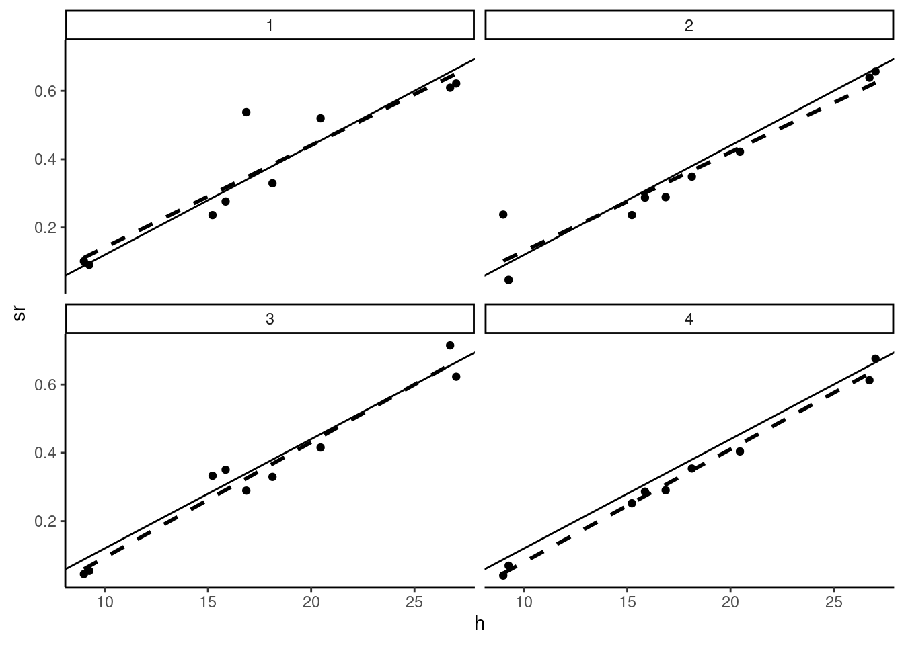
We then generate a large number of samples and for each of them, we compute the estimator of the slope and we plot the empirical distribution of \(\hat{\beta}\) using a histogram. We consider different sample sizes; we use the “repeated in fixed sample” hypothesis,7 i.e., we increase the size of the sample by duplicating the same values of \(x\). The histograms are presented in Figure 2.9, along with the normal density curve. The distribution of \(\hat{\beta}\) is centered on \(\beta\), whatever the sample size, which illustrates the fact that the estimator is unbiased. As the sample size is growing, we can see two changes in the shape of the histogram:
- it is more and more concentrated around the mean value of \(\hat{\beta}\), which is due to the fact that the standard deviation of \(\hat{\beta}\) is inversely proportional to sample size,
- the adjustment by the normal density curve is very bad in small samples; especially, the distribution of the estimator is highly leptokurtic, but the adjustment gets much better for larger samples.
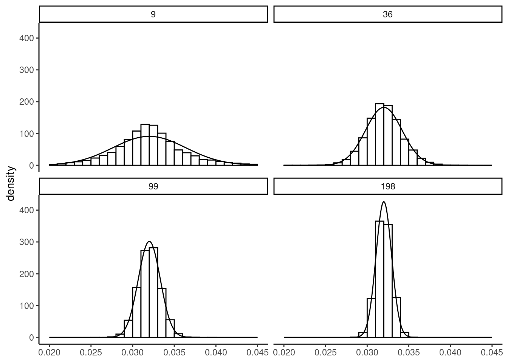
Next, we plot in Figure 2.10 the distribution of \(\sqrt{N}(\hat{\beta}-\beta)\), which has constant mean and standard deviation (respectively 0 and \(\sigma_\epsilon/\sigma_x)\). Therefore, only the shape of the distribution changes when the sample size increases. We can see more precisely on this figure the strength of the central-limit theorem, even for errors that follow a distribution very different from the normal.
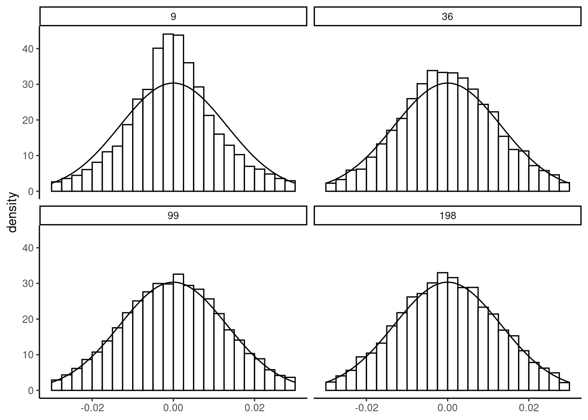
2.3 Confidence interval and tests
With the set of hypotheses we have made concerning the errors of the model, the distribution of the estimator is completely defined by:
\[ \hat{\beta}_N \stackrel{a}{\sim} \mathcal{N}\left(\beta, \frac{\sigma_{\epsilon}}{\sqrt{N}\hat{\sigma}_x}\right) \]
where \(\stackrel{a}{\sim}\) means that the normal distribution is asymptotic and is actually a very good approximation if the sample size is large enough (which is the case in general in microeconometrics studies), whatever the distribution of the errors. Moreover, as \(\hat{\beta}_N = \beta + \sum_{n=1}^N c_n \epsilon_n\) (the estimator is a linear combination of the errors), if the errors are normal, then the distribution of \(\hat{\beta}\) is exactly normal (see Section 2.1.3.5). Removing from \(\hat{\beta}\) its expected value and dividing by its standard deviation, we get a standard normal variable:
\[ \frac{\hat{\beta}_N-\beta}{\sigma_{\hat{\beta}_N}}= \frac{\sqrt{N}\hat{\sigma}_x}{\sigma_\epsilon}(\hat{\beta}_N-\beta) \stackrel{a}{\sim} \mathcal{N}(0, 1) \]
This result enables to perform two tasks:
- testing hypothesis,
- constructing a confidence interval, either for the coefficients or for the predictions of the model.
Testing hypothesis
We want to test the hypothesis that \(\mbox{H}_0: \beta = \beta_0\), the alternative hypothesis being \(\mbox{H}_1: \beta \neq \beta_0\). Denote \(z_{\alpha/2}\) the critical value of a standard normal distribution at the \(\alpha\)% error level. It is defined by: \(\mbox{P}(\mid z \mid > z_{\alpha/2}) = \alpha\) or:
\[ \mbox{P}(\mid z \mid \leq z_{\alpha/2}) = 1 - \alpha \tag{2.11}\]
Consider for example \(\alpha = 5\)%. To obtain the critical value, the qnorm function can be used, which takes a probability \(p\) as argument and returns a quantile \(q\). By default, it returns the value such that \(\mbox{P}(z < q) = p\), but the value of \(\mbox{P}(z > q) = p\) is returned if the lower.tail argument is set to FALSE:
In this case, the critical value is \(1.96\), which means that, drawing in a standard normal distribution, one gets on average 95% of values lower, in absolute values, than 1.96. The preceding command indicates respectively that:
- 2.5% of the values of a normal distribution are lower than \(-1.96\),
- 97.5% of the values of a normal distribution are lower than 1.96,
- 2.5% of the values of a normal distribution are greater than 1.96.
The 5% critical value is presented in Figure 2.11. If \(\mbox{H}_0\) is true, \((\hat{\beta}_N-\beta_0)/\sigma_{\hat{\beta}_N}\) is a draw in a standard normal distribution and we therefore should have an absolute value lower than 1.96, 95% of the time. Obviously, \(\hat{\beta}\) will almost never be exactly equal to \(\beta_0\), even if \(\mbox{H}_0\) is true because of sampling error. We have therefore the following decision rule, say at the 95% confidence level:
- if the absolute value of the computed statistic \((\hat{\beta}_N-\beta_0)/\sigma_{\hat{\beta}_N}\) is greater than the critical value, we’ll say that the difference between \(\hat{\beta}\) and \(\beta_0\) is too large to be caused by sampling error; we therefore reject the hypothesis,
- if the absolute value of the computed statistic \((\hat{\beta}_N-\beta_0)/\sigma_{\hat{\beta}_N}\) is lower than the critical value, we’ll say that the difference between \(\hat{\beta}\) and \(\beta_0\) is small enough to be caused by sampling error; we therefore don’t reject the hypothesis.

Consider as an example \(\hat{\beta} = 3.46\), \(\beta_0 = 4\) and \(\sigma_\epsilon = 0.3\). The computed statistic is \(\frac{3.46 - 4}{0.3} = - 1.8\).
hbeta <- 3.46 ; betao <- 4 ; shbeta <- 0.3
stat <- (hbeta - betao) / shbeta
stat
## [1] -1.8It is lower, in absolute value, than \(1.96\); we therefore don’t reject the null hypothesis at the 5% error level.
A more general tool is the probability value. It is the probability of drawing a value at least as large as the one we obtained (in absolute value) if the hypothesis is true. It is given by:
\[ p = 2 \left[1 -\Phi\left(\left| \frac{\hat{\beta}-\beta_0}{\sigma_{\hat{\beta}}} \right|\right)\right] \]
Probability values are computed using the pnorm function, which takes as argument a value of the variable (\(q\)) and computes the probability for a given value of its argument. The default behavior of pnorm is to return \(p = \mbox{P}(z < q)\), but the upper tail, given by \(\mbox{P}(z > x)\) is returned by setting the lower.tail argument to FALSE.
The computed statistics can be of both signs, so the last formula is the most robust: first take the absolute value of the statistic, then compute the upper tail for a normal distribution and finally multiply it by 2. The p-value is greater than \(5\)%; therefore, the hypothesis is not rejected at the 5%. The interest of the p-value is that, once it is computed, it is very easy to get the decision, whatever the error level (and even whatever the distribution). The 5-10% critical values and the p-value are represented in Figure 2.12. The absolute value of the statistic is \(1.80\), the critical values at the 5 and 10% are \(1.96\) and \(1.64\). Then:
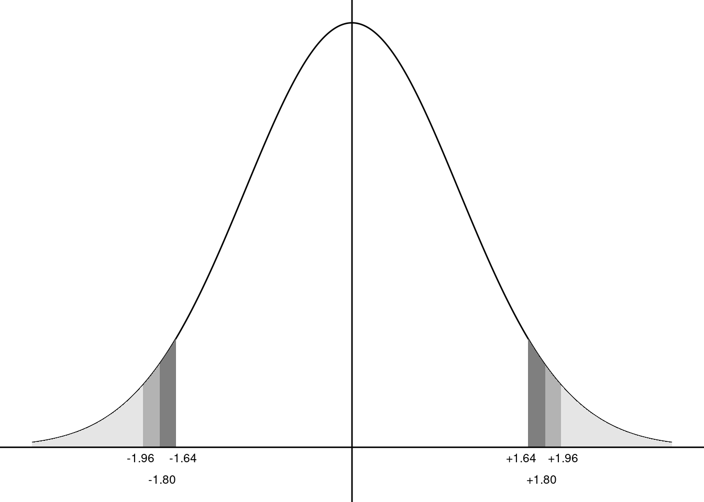
- the absolute value of the statistic being lower than the 5% critical value; the hypothesis is not rejected at the 5% level,
- the absolute value of the statistic being greater than the 10% critical value; the hypothesis is rejected at the 10% level.
The p-value is equal to 7.2%:
- the p-value is greater than 5%; the hypothesis is not rejected at the 5% level,
- the p-value is lower than 10%; the hypothesis is rejected at the 10% level.
Confidence interval
Knowing the distribution of the estimator enables one to go beyond the point estimation of the unknown parameter and to introduce the uncertainty by giving an interval of values which contains the real value of the unknown parameter with a given confidence. This is called a confidence interval. To obtain it, we start with Equation 2.11:
\[ \mbox{P}\left(\left|\frac{\hat{\beta} - \beta}{\sigma_{\hat{\beta}}}\right|<z_{\alpha/2}\right) = 1 - \alpha \]
Developing this expression, we get:
\[ \mbox{P}\left(\hat{\beta} - \sigma_{\hat{\beta}} z_{\alpha/2} < \beta < \hat{\beta} + \sigma_{\hat{\beta}} z_{\alpha/2}\right) = 1 - \alpha \]
which gives, in our example:
This confidence interval indicates that there is a probability of 95% that the true value of \(\beta\) is between 2.872 and 4.048.
Exact distribution, the Student distribution
In real settings, \(\sigma_{\hat{\beta}}=\frac{\sigma_\epsilon}{\sqrt{N}\hat{\sigma}_x}\) is unknown because \(\sigma_\epsilon\) is an unknown parameter. Replacing \(\sigma_\epsilon\) by the unbiased estimator of \(\dot{\sigma}_\epsilon\) we get \(\dot{\sigma}_{\hat{\beta}}\), the standard error of the estimation of the slope:
\[ \dot{\sigma}_{\hat{\beta}} = \frac{\dot{\sigma}_\epsilon}{\sqrt{N}\hat{\sigma}_x} \]
As \(\sigma_\epsilon\) is estimated, some more noise is added, so that the distribution of \(\hat{\beta}\) is no longer a normal, but a Student t with \(N-2\) degrees of freedom (see Section 2.1.3.5):
\[ \frac{\hat{\beta}_N-\beta}{\dot{\sigma}_{\hat{\beta}_N}}= \frac{\sqrt{N}\hat{\sigma}_x}{\dot{\sigma}_\epsilon}(\hat{\beta}_N-\beta) \sim t_{N-2} \]
The Student distribution has a 0 expected value and a variance equal to \(\frac{N - 2}{N -4}\), which tends to 1 for large \(N\). Moreover, the Student distribution converges in distribution to a normal distribution. Therefore, for large \(N\), the same inference as the one presented for known \(\sigma_\epsilon\) can be applied, using the normal distribution as a good approximation. For small samples, however, critical values of the Student distribution should be used. The relevant 95% critical values are computed below for numbers of degrees of freedom equal to 5, 10, 50, 100 and 1000:
[1] 2.571 2.228 2.009 1.984 1.962Therefore, the normal distribution can be safely used if the sample has at least a few hundreds of observations.
Inference with R
R has different functions that extract information about the statistical properties of the fitted model. To illustrate their use, we use once again the price-time model:
pxt <- lm(sr ~ h, prtime)Detailed results of the model are computed using the summary method for lm objects:
spxt <- summary(pxt)which returns an object of class summary.lm. Moreover, summary.lm prints nicely. It is therefore customary to use summary without storing the result in an object but only to visualize the detailed results of the fitted model:
summary(pxt)
Call:
lm(formula = sr ~ h, data = prtime)
Residuals:
Min 1Q Median 3Q Max
-0.07938 -0.03535 -0.00034 0.01430 0.14291
Coefficients:
Estimate Std. Error t value Pr(>|t|)
(Intercept) -0.01548 0.07326 -0.21 0.8386
h 0.02393 0.00393 6.09 0.0005 ***
---
Signif. codes: 0 '***' 0.001 '**' 0.01 '*' 0.05 '.' 0.1 ' ' 1
Residual standard error: 0.0718 on 7 degrees of freedom
Multiple R-squared: 0.841, Adjusted R-squared: 0.818
F-statistic: 37.1 on 1 and 7 DF, p-value: 0.000497The output first indicates the “call”, i.e., the function that has been used to estimate the model. Then, the distribution of the residuals is summarized using the five numbers (the range min and max, the two quartiles and the median).8 Note that the mean is not indicated, as it is necessarily 0 for a model fitted by OLS. Next, the table of coefficients is printed, containing:
- the names of the effects,
- the value of the estimates (\(\hat{\beta}\)),
- their standard errors (\(\dot{\sigma}_{\hat{\beta}}\)),
- the Student statistic which is the ratio of the previous two columns and is a special case of the test statistic \((\hat{\beta}-\beta_0) /\dot{\sigma}_{\hat{\beta}}\) where \(\beta_0=0\),
- the probability value of this statistic.
Thes kinds of tests are often considered as tests of significance of the corresponding covariate. If the hypothesis that \(\beta_0=0\) is rejected, we would say that the coefficient is “significant”, which means more precisely that it is significantly different from 0. As we have a very small sample, it is worth considering the critical value of a Student instead of a normal distribution. We get here:
cv <- qt(0.025, df = df.residual(pxt), lower.tail = FALSE)
cv
## [1] 2.365- for the intercept, the t statistic is much lower than the critical value and the probability value is far greater than 5%; therefore, the hypothesis that \(\alpha = 0\) is not rejected,
- for the slope, the t statistic is much higher than the critical value and the probability value is far lower than 5%; therefore, the hypothesis that \(\beta = 0\) is rejected.
This table of coefficients is a matrix that is stored in the summary.lm object with the coefficients name. As such, it can be extracted using spxt$coefficients or using the coef method of summary.lm: coef(spxt). Finally, the printed output ends with some general indicators (often GOF for goodness-of-fit indicators) as the residual standard error (\(\dot{\sigma}_\epsilon\), which can be extracted using the sigma function), two measures of the coefficient of determination, and the \(F\) statistic that is relevant for the multiple regression model.
The confint function computes the confidence interval for the coefficients:
confint(pxt, level = 0.9) 5 % 95 %
(Intercept) -0.15428 0.12332
h 0.01648 0.03138we set here the level argument to 0.9 (the default value being 0.95) and the results indicate that there is a 90% probability that the true value of the slope is between 0.016 and 0.031.
Delta method
It’s often the case that the parameters of interest are not the fitted parameters, but some functions of them. In the price-time model, the fitted parameters are \(\alpha\) and \(\beta\), but the structural parameters (the lower and higher values of the travel time) are \(a\) and \(b\):
\[ \left\{ \begin{array}{rcl} a &=& F^a(\alpha, \beta) = -\frac{\alpha}{\beta} \\ b &=& F^b(\alpha, \beta) = \frac{1 - \alpha}{\beta} \end{array} \right. \tag{2.12}\]
The structural parameters are easily retrieved using Equation 2.12. The so-called delta method can be used to compute their standard deviations. Denoting \(f\) the first derivatives of \(F\), we write a first-order Taylor expansion for \(F^a\) and \(F^b\):
\[ \left\{ \begin{array}{rcl} a &=& F^a(\alpha_0, \beta_0) + (\alpha - \alpha_0) f^a_\alpha(\alpha_0, \beta_0) + (\beta - \beta_0) f^a_\beta(\alpha_0, \beta_0)\\ b &=& F^b(\alpha_0, \beta_0) + (\alpha - \alpha_0) f^b_\alpha(\alpha_0, \beta_0) + (\beta - \beta_0) f^b_\beta(\alpha_0, \beta_0)\\ \end{array} \right. \]
So that the variances of the fitted structural parameters are approximately:
\[ \left\{ \begin{array}{rcl} \hat{\sigma}_{\hat{a}} ^ 2 &=& f^a_\alpha(\alpha_0, \beta_0) ^ 2 \hat{\sigma}_{\hat{\alpha}} ^ 2 + f^a_\beta(\alpha_0, \beta_0) ^ 2 \hat{\sigma}_{\hat{\beta}} ^ 2 + 2 f^a_\alpha(\alpha_0, \beta_0)f^a_\beta(\alpha_0, \beta_0) \hat{\sigma}_{\hat{\alpha}\hat{\beta}} \\ \hat{\sigma}_{\hat{b}} ^ 2 &= & f^b_\alpha(\alpha_0, \beta_0) ^ 2 \hat{\sigma}_{\hat{\alpha}} ^ 2 + f^b_\beta(\alpha_0, \beta_0) ^ 2 \hat{\sigma}_{\hat{\beta}} ^ 2 + 2 f^b_\alpha(\alpha_0, \beta_0)f^b_\beta(\alpha_0, \beta_0) \hat{\sigma}_{\hat{\alpha}\hat{\beta}} \\ \end{array} \right. \]
Replacing (\(\alpha_0, \beta_0\)) by (\(\hat{\alpha}, \hat{\beta}\)) and using the formulas for the variances and covariance of \(\hat{\alpha}\) and \(\hat{\beta}\) given in Equation 2.9, we get:
\[ \left\{ \begin{array}{rcl} \hat{\sigma}_{\hat{a}} &=& \frac{\dot{\sigma}_\epsilon}{\sqrt{N}\hat{\sigma}_x}\frac{1}{\hat{\beta}} \sqrt{\hat{\sigma}_x ^ 2 + \left(\bar{x} + \frac{\hat{\alpha}}{\hat{\beta}}\right) ^ 2} \\ \hat{\sigma}_{\hat{b}} &=& \frac{\dot{\sigma}_\epsilon}{\sqrt{N}\hat{\sigma}_x}\frac{1}{\hat{\beta}} \sqrt{\hat{\sigma}_x ^ 2 + \left(\bar{x} - \frac{1 - \hat{\alpha}}{\hat{\beta}}\right) ^ 2} \end{array} \right. \]
bx <- mean(x)
sx <- sqrt(mean( (x - bx) ^ 2))
halpha <- coef(pxt)[1] %>% unname
hbeta <- coef(pxt)[2] %>% unname
hseps <- sigma(pxt)
ab <- c(- halpha / hbeta, (1 - halpha) / hbeta)
sab <- hseps / sx / sqrt(nobs(pxt)) / hbeta *
sqrt(c(sx ^ 2 + (bx + halpha / hbeta) ^ 2,
sx ^ 2 + (bx - (1 - halpha) / hbeta) ^ 2)
)
ab
## [1] 0.647 42.431
sab
## [1] 2.961 4.197which finally leads to the 95% confidence interval:
There is therefore a 95% probability that the maximum value of time is between 32.5 and 52.4 euros and the hypotheses that the minimum value of time is 0 is not rejected.
Confidence interval for the prediction
Once the model is estimated, a prediction for every observation can be computed using the formula of the conditional expectation of \(y\) for \(x = x_n\), which is:
\[ \mbox{E}(y \mid x = x_n) = \alpha + \beta x_n + \mbox{E}(\epsilon \mid x = x_n) = \alpha + \beta x_n \]
As \(\hat{\alpha}\) and \(\hat{\beta}\) are unbiased estimators of \(\alpha\) and \(\beta\), \(\hat{y}_n = \hat{\alpha} + \hat{\beta} x_n\) is an unbiased estimator of \(\mbox{E}(y \mid x = x_n)\). Applying the formula for the variance of a sum, we have: \(\mbox{V}(\hat{y}) = \mbox{V}(\hat{\alpha}) + x_n ^ 2 \mbox{V}(\hat{\beta}) + 2 x_n \mbox{cov}(\hat{\alpha}, \hat{\beta})\). Using Equation 2.9, we get:
\[ \sigma_{\hat{y}_n} ^ 2 =\frac{\sigma_\epsilon ^ 2}{N \sigma_x ^ 2} \left( \sigma_x ^ 2 + (x_n - \bar{x}) ^ 2\right) \]
which finally leads to the formula of the standard deviation of the predictions:
\[ \sigma_{\hat{y}_n} = \frac{\sigma_\epsilon}{\sqrt{N}} \sqrt{1 + \frac{(x_n - \bar{x}) ^ 2}{\hat{\sigma}_x ^ 2}} \] \(\sigma_{\hat{y}_n}\) increases with the deviation of \(x_n\) from the sample mean. Moreover, \(\sigma_{\hat{y}}\) tends to 0 when \(N\) tends to infinity, which means that \(\hat{y}_n\) is a consistent estimator of \(\mbox{E}(y \mid x = x_n)\).
Consider now the standard deviation of \(y_n = \mbox{E}(y \mid x = x_n) + \epsilon_n\). To the variation due to the estimation of \(\alpha\) and \(\beta\), we have to add the one associated with \(\epsilon_n\). Therefore, the variance of \(y_n\) is the sum of \(\sigma_{\hat{y}_n} ^ 2\) and \(\sigma_\epsilon^2\) and therefore its standard deviation is:
\[ \sigma_{y_n} = \sqrt{\sigma_{\hat{y}_n} ^ 2 + \sigma_{\epsilon} ^ 2}= \frac{\sigma_{\epsilon}}{\sqrt{N}} \sqrt{1 + \frac{(x_n - \bar{x}) ^ 2}{\hat{\sigma}_x ^ 2} + N} \] Note that when \(N \rightarrow \infty\), \(\sigma_{y_n}\), contrary Note that \(\sigma_{\hat{y}_n}\) tends to \(\sigma_\epsilon\) and not to 0.
A confidence interval for \(\hat{y}_n\) is obtained by adding and subtracting to the point estimator the estimated standard deviation \(\sigma_{\hat{y}_n}\) times the critical value (here a Student \(t\) with \(N-2=7\) degrees of freedom). A prediction interval for \(y_n\) is obtained the same way, but using \(\sigma_{y_n}\) instead of \(\sigma_{\hat{y}_n}\). The following code computes the two standard deviations and the relevant limits of the confidence / prediction intervals:
mux <- mean(prtime$h)
N <- nobs(pxt)
sx2 <- sum( (prtime$h - mux) ^ 2) / N
tcv <- qt(0.975, df = df.residual(pxt))
prtime <- prtime %>%
mutate(fitted = fitted(pxt),
sehy = sigma(pxt) / sqrt(N) *
sqrt( 1 + (prtime$h - mux) ^ 2 / sx2),
sey = sigma(pxt) / sqrt(N) *
sqrt( 1 + (prtime$h - mux) ^ 2 / sx2 + N),
lowhy = fitted - tcv * sehy, uphy = fitted + tcv * sehy,
lowy = fitted - tcv *sey, upy = fitted + tcv * sey)
prtime %>% select(fitted, lowhy, uphy, lowy, upy) %>% head(3)# A tibble: 3 × 5
fitted lowhy uphy lowy upy
<dbl> <dbl> <dbl> <dbl> <dbl>
1 0.624 0.522 0.726 0.426 0.822
2 0.474 0.412 0.536 0.293 0.655
3 0.631 0.527 0.735 0.432 0.830These values can also be obtained with the predict function, with the interval argument set to "confidence" or "prediction":
In Figure 2.13, the two intervals are represented:
- for the confidence interval, we use
geom_smoothwithmethod = "lm"and the defaultTRUEvalue for theseargument; in this case, we have a gray zone which figures the confidence interval (by default at the 95% level, but another level can be used by setting thelevelargument to the desired level), - for the confidence interval, we use
geom_errorbarthat draws vertical segments, which represent here the limits of the confidence interval we have computed.
prtime %>% ggplot(aes(h, sr)) + geom_point() +
geom_smooth(method = "lm", color = "black") +
geom_errorbar(aes(ymin = lowy, ymax = upy))
As an example, consider trips from Bordeaux to Paris. Reported transport time is 242 minutes, which is approximately 4 hours. The high speed track, opened in 2018 reduces this transport time to a minimum of 2 hours and 6 minutes. We consider 3 hours as the mean transport time, and we consider the average price to be 75 euros. Assuming that the conditions on the air transport market are unchanged, what prediction can we make about the change of the modal share of rail? We first construct a tibble called bordeaux with two lines: the first contains the actual features of the Paris-Bordeaux trip, and the second the new features.
bordeaux <- prtime %>% filter(town == "Bordeaux") %>%
select(town, pr, pa, tr, ta) %>%
add_row(town = "BordeauxSim", pr = 75,
pa = 82.6, tr = 180, ta = 165) %>%
mutate(h = (pa - pr) / ( (tr - ta) / 60))The prediction of train’s modal share is obtained using the predict function with the new argument which is a data frame containing the values of the covariates for which we want to compute predictions (this is the bordeaux table in our example):
prd <- predict(pxt, new = bordeaux, interval = "confidence") %>% as_tibble
prd# A tibble: 2 × 3
fit lwr upr
<dbl> <dbl> <dbl>
1 0.624 0.522 0.726
2 0.712 0.580 0.844The model predicts that the train’s share increases from 0.624 to 0.712, but the confidence intervals are quite large and overlap. Present and predicted market shares are represented by a triangle and by a circle in Figure 2.14, along with the confidence intervals.
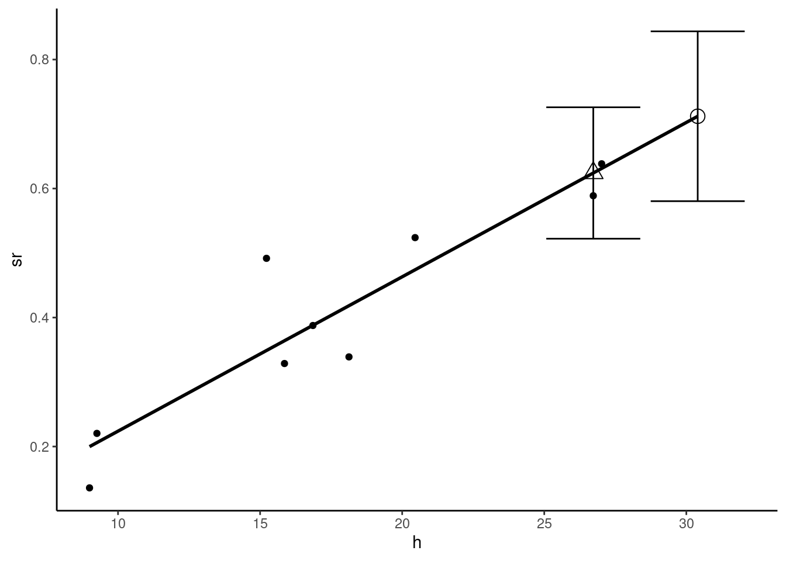
Amemiya, Takeshi. 1985. Advanced Econometrics. Harvard University Press.
Davidson, Russell, and James G. MacKinnon. 1993. Estimation and Inference in Econometrics. New-York: Oxford University Press.
———. 2004. Econometric Theory and Methods. Oxford University Press.
We don’t explicitly indicate that the expected values are conditional on \(x\) to save space.↩︎
Note that the mean of the residuals is 0.↩︎
These two estimators are inspired by Davidson and MacKinnon (2004), page 97, and Davidson and MacKinnon (1993), pages 123-124.↩︎
Note that the numerator of Equation 2.10 is not exactly the sample covariance, which is \(\sum_n (x_n - \bar{x})(\epsilon_n - \bar{\epsilon})/N\).↩︎
See Davidson and MacKinnon (1993), pp. 116-117 for details.↩︎
Any series can be summarized this way using the
fivenumfunction.↩︎